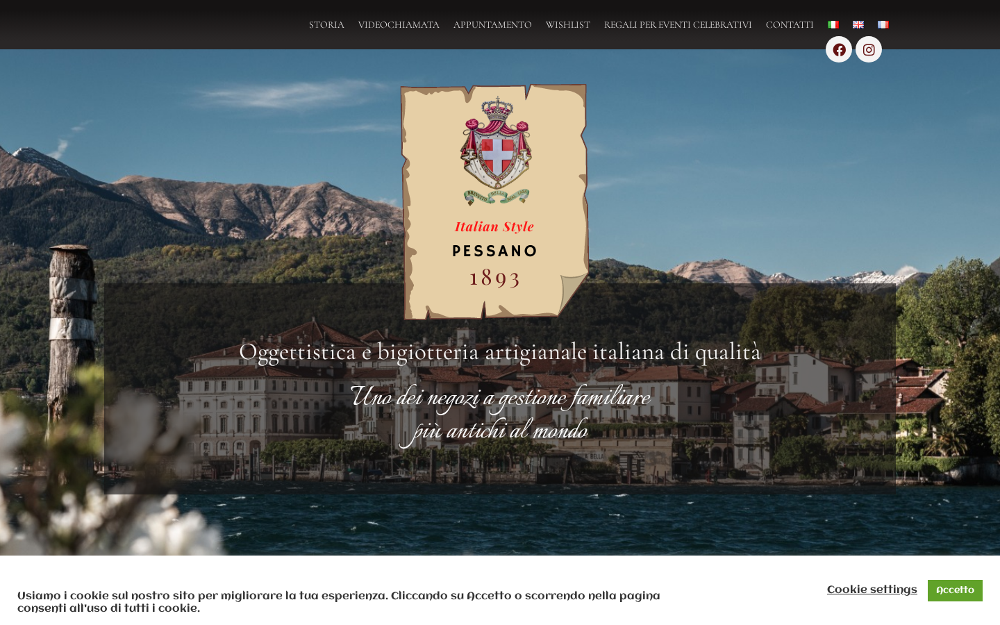
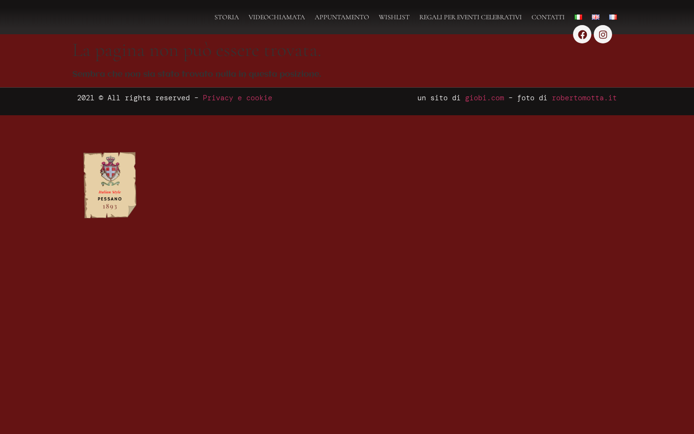
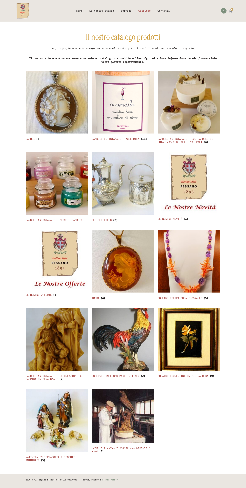

La homepage funziona correttamente. Abbiamo trovato due problemi segnalati dal cliente: (1) la pagina del catalogo non si apre su pessano.it, mostrando invece una pagina di errore con sfondo scuro (il “colore viola”); (2) le categorie del catalogo sono in ordine sbagliato perché cinque categorie nuove non hanno il numero d'ordine impostato. Entrambi i problemi sono risolvibili.
La pagina principale del sito si apre correttamente: il logo, il menu, le immagini e tutti i contenuti si vedono senza problemi. Non c’è nessun colore viola sulla homepage.

Cliccando su “Catalogo” il sito mostra una pagina di errore (“La pagina non può essere trovata”) con uno sfondo rosso molto scuro. Questo sfondo è probabilmente quello che viene percepito come “colore viola”. Il problema si verifica perché l’indirizzo interno del sito punta ancora alla versione di prova, e non al dominio definitivo pessano.it.

Le categorie del catalogo hanno un numero d’ordine che decide in che posizione appaiono. Cinque categorie (Cammei, Candele Accendila, Eco candele di soia, Price's Candles, Old Sheffield) non hanno questo numero impostato, quindi finiscono tutte in cima al catalogo invece che nella posizione giusta.

Ecco come appaiono le categorie ora e come dovrebbero apparire. Le categorie evidenziate in rosso sono quelle senza ordine impostato che vanno a finire in cima.
| # | Categoria | Ordine impostato | Stato |
|---|---|---|---|
| 1 | Cammei | 0 (non impostato) | Fuori posto |
| 2 | Candele Artigianali - Accendila | 0 (non impostato) | Fuori posto |
| 3 | Candele Artigianali - Eco candele di soia | 0 (non impostato) | Fuori posto |
| 4 | Candele Artigianali - Price's Candles | 0 (non impostato) | Fuori posto |
| 5 | Old Sheffield | 0 (non impostato) | Fuori posto |
| 6 | Le Nostre Novità | 1 | OK |
| 7 | Le Nostre Offerte | 2 | OK |
| 8 | Ambra | 3 | OK |
| 9 | Collane Pietra dura e Corallo | 4 | OK |
| 10 | Candele - Creazioni di Sabrina | 6 | OK |
| 11 | Sculture in legno Made in Italy | 7 | OK |
| 12 | Mosaici Fiorentini | 8 | OK |
| 13 | Natività in terracotta | 9 | OK |
| 14 | Uccelli e Animali porcellana | 10 | OK |
| Campo | Valore |
|---|---|
| Server | athena (Cloudways) |
| App ID | njtxuppngd |
| Path | /home/master/applications/njtxuppngd/public_html |
| URL produzione | https://pessano.it |
| URL staging | https://wordpress-1174648-6105957.cloudwaysapps.com |
| Tema attivo | hello-theme-child-master |
| Scenario | Verifica segnalazione (search) |
| Iterazioni | 1 |
| Verdict | ISSUES |
Le opzioni WordPress siteurl e home sono ancora impostate sull'URL di staging Cloudways. Questo causa 404 sulle pagine interne quando si naviga da pessano.it, perché WordPress genera link interni verso il dominio sbagliato.
Fix:
Nota: la pagina 404 ha sfondo rgb(101, 19, 19) (rosso scuro/burgundy) + link rgb(204, 51, 102) (rosa/magenta). Questo è il template 404 del vecchio tema non Elementor. Dopo il fix siteurl non dovrebbe più apparire.
Il CategoryService ordina per meta pessano_cat_order. 5 categorie hanno questo campo a 0 (non impostato), finendo in cima al catalogo ordinate per nome.
Fix: impostare il campo Ordine dall'admin WP (Prodotti → Categorie → Modifica) oppure via WP-CLI:
Nessun colore viola (#7b2d8e, #9b59b6, #663399 o simili) trovato nel CSS del tema, nello style.css del child theme, o nei computed styles delle pagine. I bottoni WooCommerce sono correttamente in noce scuro (#3E2723). Il “viola” segnalato dal cliente è lo sfondo della pagina 404 (rgb(101, 19, 19)) che appare quando /catalogo/ non viene trovato.
La shop page WooCommerce (ID 187, slug “negozio”) è in draft. La pagina Catalogo (ID 410) è pubblicata ma non è assegnata come shop page WooCommerce. Dopo il fix siteurl, valutare se assegnare la pagina 410 come shop page: wp option update woocommerce_shop_page_id 410